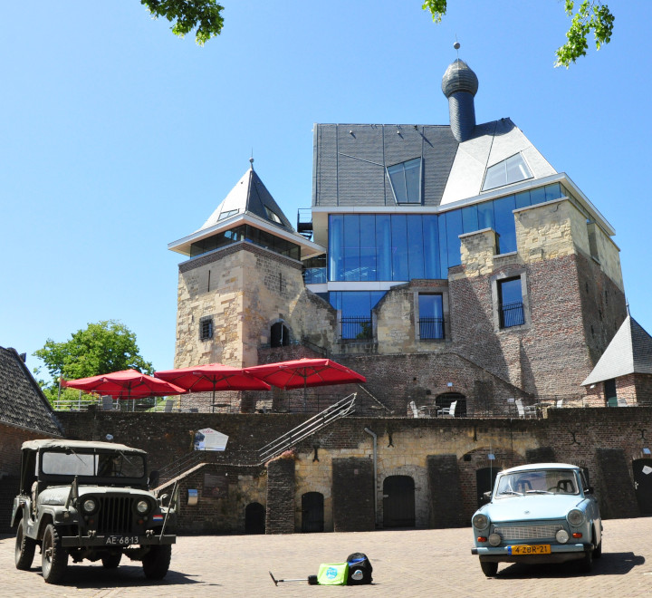
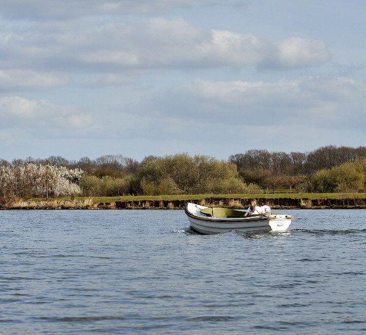

Kessel
De Kern van Kessel:
- Eeuwenoud Maasdorp
- Pittoreske markt
- Modern Kasteel de Keverberg
- Bruisende dorpskern
- Prachtig Maaspanorama
Van Peel naar Kasteel
Reserveer nu een jeep, Trabant óf snorfiets voor een dagvullend programma met je gezin, vrienden, familie of collega’s! Je maakt een mooie toeristische tocht van Meijel naar Kessel. Onderweg word je al even “warm” gemaakt met wat je te wachten staat in Kessel.
Afhankelijk van het arrangement wat je kiest geniet je van een lunch (of later op de dag van een diner) bij Baron Frits en breng je een bezoek aan Kasteel De Keverberg met een rondgang of je hebt “Code Keverberg” óf “Het geheim van de Baron” geboekt. 2 hele leuke interactieve tochten door- en om het kasteel waarbij je op allerlei manieren wordt uitgedaagd.
Deze tochten worden georganiseerd door Buiten Zinnen. Kortom een zeer geslaagde dag voor jong en oud! Aan het einde van de dag keer je weer terug naar Meijel en is daar is het eindpunt van de dag zodat je met een grote glimlach weer naar huis kunt. Óf je geniet natuurlijk nog van een drankje, hapje of borrel bij De Heere van Meijel
Sloepvaren vanuit romantisch Maasdorp Kessel
 Dat is de zon op uw gezicht, de wind door uw haren. Dat is genieten! Sloepverhuur Limburg biedt een heerlijke vaartocht over de Maas tussen Venlo en Roermond. Maak er met uw gezin, vrienden of collega’s van een heerlijke dag van! Vanaf de Loswal – aan de voet van Kasteel De Keverberg – verkent u de Maas met een van de eenvoudig te bedienen elektrische sloepen. Cirkel rond op de Maasarm en ontdek waterrijk natuurgebied De Asseltse Plassen. Dát is genieten op de golven van de Maas.
- Eenvoudig te bedienen 6-persoons sloepen
- Geen vaarbewijs nodig
- Al vanaf twee uur varen te boeken
- Elektrisch aangedreven dus stil en duurzaam
Boeken kan via www.sloepverhuurlimburg.nl of telefonisch via verhuurpartner Happy Whale 085 303 2787